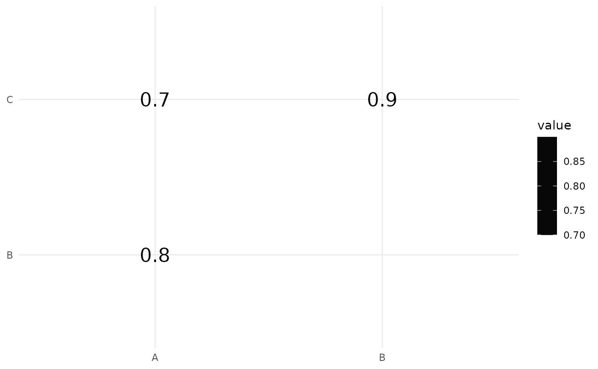
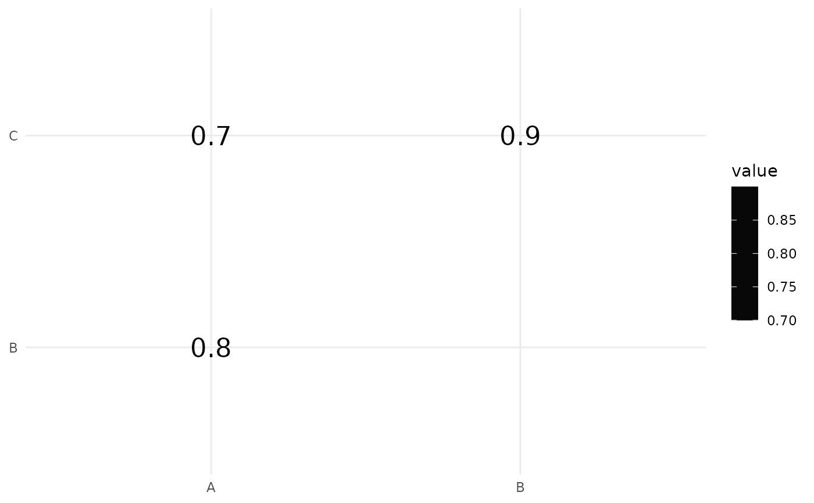

Plot overlap coefficient matrix
mm_plot_overlap_coef.RdVisualizes an overlap coefficient matrix.
Arguments
- data
A square matrix (e.g
mm_overlap_matrix()output) representing overlap coefficients to be visualized.- side
A character string indicating which triangle of the matrix to display. Options are "lower" (default) or "upper".
- show
A character string specifying whether to display "shape" (default) or "value" in the plot.
- shape_type
Numeric value specifying the type of shape to use in the plot. Defaults to 21 (circle).
- shape_size
Numeric value controlling the stroke size of the shapes. Defaults to 0.5.
- text_size
Numeric value specifying the size of the text when
show = "value". Defaults to 6.- text_font
Character string specifying the font family to use for text labels. Defaults to
NA.- excludes
A vector of numeric values to exclude from the plot. Defaults to
NULL.- color_scale
A character string or vector of colors to define the gradient color scale. Defaults to "gray3".
- ...
Additional arguments passed to the
guide_colorbarfunction.
Examples
library(ggplot2)
# Example overlap coefficient matrix
overlap_matrix <- matrix(c(1, 0.8, 0.7, 0.8, 1, 0.9, 0.7, 0.9, 1), ncol = 3)
colnames(overlap_matrix) <- rownames(overlap_matrix) <- c("A", "B", "C")
# Plot lower triangle with shapes
mm_plot_overlap_coef(overlap_matrix, side = "lower", show = "shape")
 # Plot upper triangle with values
mm_plot_overlap_coef(overlap_matrix, side = "upper", show = "value")

# Plot upper triangle with values
mm_plot_overlap_coef(overlap_matrix, side = "upper", show = "value")
